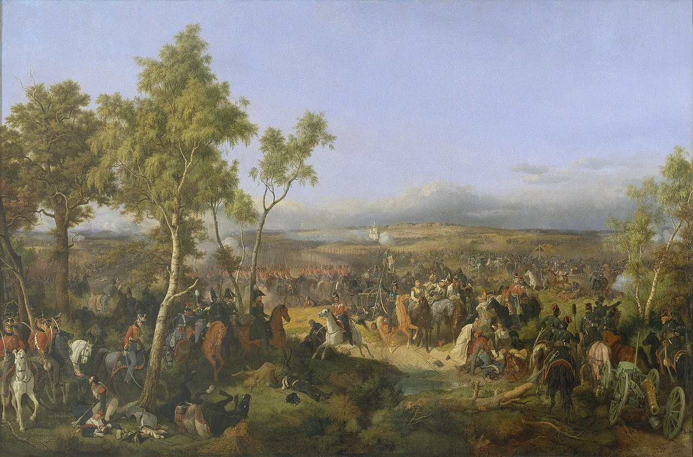
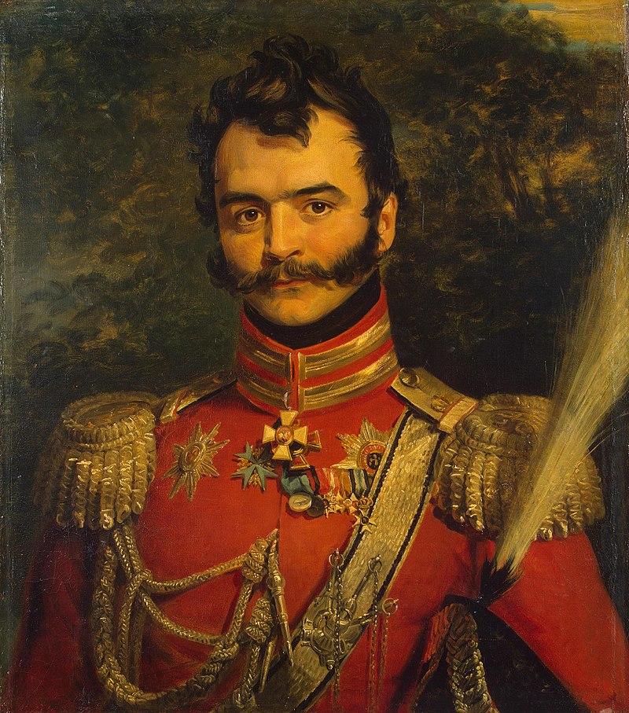
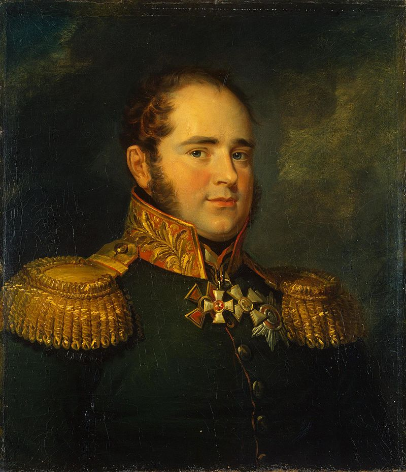

쿠투조프, 두 도시를 뒤흔들다 - 타루티노 전투
게시: 2021-04-26T06:30:35+09:00
타루티노에 주둔한 쿠투조프의 러시아군이 충분한 보급과 병력 보충을 받아 점점 강해지고 있다는 말씀은 이전에 드렸습니다. 타루티노에 약 4만의 패잔병들을 이끌고 도착한 쿠투조프는 직후부터 매일 장비와 보충병을 받아 약 4주 후에는 8만8천의 정규 병력과 함께 1만3천의 돈(Don) 강 유역 출신의 코삭 기병대, 그리고 기타 비정규 기병대 1만5천을 거느리게 되었고, 620문이 넘는 포병대도 갖추게 되었습니다. 이 정도 병력이면 모스크바로 진격하여 나폴레옹과 다시 한번 자웅을 겨뤄볼만 했습니다. 그러나 물론 쿠투조프는 그러지 않았습니다. 심지어 짜르 알렉산드르가 친절하게도 이 부대를 이렇게 저 부대를 저렇게 움직여 나폴레옹을 포위 섬멸하는 상세한 작전 계획서를 작성하여 보내주며 '이대로만 하면 러시아의 승리'라고 확신까지 시켜주었지만 쿠투조프는 그저 웃고는 책상 서랍 속에 쳐넣어 버렸습니다. 혹자는 쿠투조프가 나폴레옹이 매서운 러시아의 동장군에게 붙잡히도록 함정을 파고 있었다고도 합니다만 어떻게 보면 그는 그냥 이제 뭘 어떻게 해야 할지 몰랐던 것 같기도 했습니다. 실제로 (이제는 쿠투조프라는 인간에 대해 꽤 잘 알게 된) 러시아 사령부의 많은 사람들이 후자의 방향으로 생각하고 있었습니다. 실은 쿠투조프도 굳이 서두를 이유가 없긴 했습니다. 그의 군대는 나날이 강해지고 있었는데, 프랑스군은 나날이 약해지는 것이 그의 게으른 눈에도 잘 보였거든요. 최소한 그와 대치하고 있던 뮈라의 선봉대는 확실히 매일 약해지고 있었습니다. 모스크바에서 멀리 떨어진 부대들은 식량 부족으로 쫄쫄 굶고 있었는데 특히 뮈라의 부대가 가장 큰 피해를 보고 있었습니다. 먹을 것도 부족한데다 식량을 구하러 인근 마을로 보냈던 소규모 징발대가 자주 러시아 농민들이나 러시아 유격병들의 매복에 당하거나 탈영했기 때문이었습니다. 뮈라의 부대, 그리고 모스크바 인근에 주둔한 그랑다르메의 부대들은 이런 식으로 약 1만5천 정도를 상실했습니다. 그럼에도 불구하고 뮈라의 부대와 러시아군 사이의 분위기는 그다지 적대적이지 않았습니다. 뮈라의 부하들이나 쿠투조프의 부하들이나, 사실상 전쟁은 끝났다는 분위기였거든요. 많은 프랑스 장교들은 이제 곧 두 황제가 평화 조약을 맺고 이대로 러시아군과 함께 페르시아를 거쳐 인도로 쳐들어갈 거라는 소문을 믿고 있었습니다. 그러니 굳이 두 부대 간에 피를 흘릴 필요가 없었고, 프랑스군의 분위기가 그러다보니 같은 프랑스어를 모국어처럼 구사하는 러시아군 장교들도 순찰시에 마주치는 프랑스군 장교들과 잡담을 주고 받기도 했습니다. 한번은 주인 없는 가축 한 떼가 프랑스군과 러시아군 사이를 지나가자, 양군은 협의 끝에 사이좋게 가축떼를 반반씩 나눠가졌습니다. 이런 온화한 분위기는 천방지축이지만 거부하기 어려운 매력의 소유자 뮈라 본인 때문에 더욱 아기자기 해졌습니다. 러시아군과 대치 중인 최전선의 프랑스 병사들이 불편한 지형에 구축된 초소에서 고생하는 것을 보자, 사내 대장부 뮈라는 천연덕스럽게 맞은 편 러시아군 초소까지 말을 달려가 "미안한데 한 100미터 정도만 뒤로 물러가주면 우리 병사들이 조금 고생을 덜 할 것 같다"라고 부탁했고, 유럽 전체에 위명이 쟁쟁한 이 나폴리 국왕의 개인적인 부탁을 받은 러시아군 장교는 순순히 전선을 뒤로 물려주기도 했습니다. 뮈라는 이렇게 자신의 매력이 파리 살롱의 귀부인들에게 통하는 것처럼 잘 먹히자 더욱 기고만장하여 자주 러시아군 초소를 들락거렸고 오페라 배우 같은 그의 화려한 군복과 치렁치렁한 곱슬머리 덕분에 그를 몰라볼래야 모를 수가 없던 코삭 기병들은 그가 오면 "Le roi, le roi !" (왕이시여, 왕이시여!)를 외쳐주며 뮈라를 더욱 기고만장하게 만들었습니다.

(누가 봐도 이런 복장의 적장이 태연하게 말을 몰아 온다면 감히 총을 쏠 수 없을 것 같습니다. 왠지 예의가 아닐 것 같거든요.)
그러나 실제로는 뮈라의 위치는 무척 취약했습니다. 보로노보(Voronovo)와 빈코보(Vinkovo) 일대에 주둔한 그의 부대는 약 2만5천에 불과했고, 러시아군과의 관계를 낙관한 뮈라 때문에 경계도 허술히 하고 있었습니다. 무엇보다 기병 전력이 거의 궤멸 상태였기 때문에 기동력에서 크게 열세였습니다. 러시아군도 그런 상황을 잘 알고 있었습니다. 따라서 쿠투조프 휘하의 온갖 장군들은 당장 눈 앞의 뮈라라도 들이치자고 성화였습니다만 그래도 쿠투조프는 움직이지 않았습니다. 그러나 재차 삼차 상트 페체르부르그에서 알렉산드르가 편지를 보내 당장 공격하라고 채근하자 결국 쿠투조프도 견디지 못했습니다. 그는 마침내 공격 명령을 내렸습니다. 그러나 내리기 싫은 명령을 내리느라 그랬는지 그는 매우 짧은 준비 기간만 주었습니다. 워낙 시간이 촉박한데다 원래 출신 가문만 좋았을 뿐 엉망진창이었던 쿠투조프의 참모진 덕분에 구체적인 명령은 제 날짜에 공격 부대에 전달조차 되지 않았습니다. 그러다보니 공격 개시일인 10월 17일에 쿠투조프가 비장한 각오로 공격을 지휘하기 위해 최전선에 가보니, 공격 대형으로 도열해 있어야 부대들은 평화롭게 아침 식사 준비를 하거나 먹을 것을 구하러 인근 농가로 흩어져 있었습니다. 쿠투조프는 대노했습니다. 그는 다음날로 공격을 연기하고는 예르몰로프 등 부하 장군들에게 불처럼 화를 내며 이번에는 공격 준비를 철저히 갖추도록 추상같은 명령을 내렸습니다. 그런데 정작 다음날 아침, 이번에는 쿠투조프 본인이 전날 과음을 했는지 공격 개시선에 나타나지 않았습니다.

(10월 18일 타루티노 전투 혹은 빈코보 전투라고 불리는 쿠투조프의 반격 작전입니다.)
하지만 어차피 쿠투조프 같은 것은 공격에 필요하지 않았습니다. 언제나 쿠투조프를 젖히려는 야망에 활활 불타고 있던 베니히센은 이때다 하고는 지휘권을 이어받아 총공격에 나섰습니다. 오를로프-데니소프(Vasily Orlov-Denisov)의 코삭 부대를 선두로 한 러시아군의 공격은 완벽한 기습에 성공했습니다. 스페인 알함브라 궁전과의 인연으로 유명했던 세바스티아니(Horace François Bastien Sébastiani) 장군의 부대는 거의 대부분 잠든 상태에서 습격을 받고 혼비백산, 수백명이 포로로 잡혔습니다. 이대로 밀어 붙였다면 뮈라의 본대까지도 밀릴 판국이었는데, 왜 러시아군이 코삭 기병대를 정규군으로 간주하지 않는지가 여기서 드러났습니다. 깜짝 놀란 세바스티아니 부대원들이 허둥지둥 말을 타고 도망치는 것을 내버려둔 채, 코삭 기병들은 프랑스군이 버리고 간 텐트와 짐짝을 약탈하기 시작했던 것입니다. 이들이 이렇게 경제 활동을 벌이며 환호하는 사이 노련한 프랑스군은 후방에서 전열을 정돈하여 반격에 나섰습니다. 베니히센이 이끄는 러시아 본대가 도착하자 곧 다시 전세가 뒤집혔고 프랑스군이 결국 밀려나긴 했습니다만, 뮈라의 본대는 대오를 유지한 채 질서있는 전술적 퇴각을 할 수 있었습니다. 프랑스군은 2천5백의 병력 손실을 입었으나 러시아군도 완벽한 기습을 한 것치고는 피해가 커서 1천의 피해를 냈습니다. 그리고 그 중에는 러시아군의 용장 중 하나인 바고부트 장군까지 포함되어 있었습니다.

(오를로프-데니소프입니다. 그는 톨스토이의 전쟁과 평화에도 잠깐 등장하는 인물인데, 원래 돈(Don) 강 코삭의 족장인 Vasily Petrovich Orlov의 아들이자 모계 쪽으로도 코삭 백작인 Fedor Petrovich Denisov의 외손자였습니다. 그는 원래 그냥 오를로프였던 그의 성을 1801년 외할아버지를 기려 Orlov-Denisov로 개칭했습니다.)

(세바스티아니 장군입니다. 그는 원래 군인이라기 보다는 외교관으로서 주로 오스만 투르크의 수도 이스탄불에서 많은 활약을 했습니다. 정작 군 지휘관으로서의 역량은 그다지 빛나지 않아 스페인에서도 황폐화된 알함브라 궁전의 가치를 재발견한 것 외에는 그저 그런 활동을 보여주었고, 러시아 원정에서도 활약은 미미했습니다. 그는 프랑스 역사에 있어 루이 필립 왕정 등 나폴레옹 몰락 이후 오히려 더 중요한 역할을 많이 했습니다.)

(이 사람 좋게 생긴 분이 바고부트 장군입니다. 에스토니아 출신인 그는 다른 발트 3국 귀족들과는 달리 독일계가 아니라 독특하게도 노르웨이계 인물이었습니다. 그는 1806년 풀투스크 전투와 1807년 아일라우 전투에서도 용감히 싸웠고 나폴레옹과 틸지트 평화 조약이 이루어진 뒤에는 핀란드 침공에서 활약했습니다.) 이렇게 태산명동서일필 격으로 시원치 않았던 타루티노 전투에서의 러시아군의 전과도 늦잠을 자고 일어난 쿠투조프의 손을 거치니 대승으로 거듭날 수 있었습니다. 쿠투조프는 상트 페체르부르그에 편지를 보내 '나폴리 왕 뮈라가 이끄는 5만 대군을 공격하여 완승을 거두어 프랑스군이 토끼처럼 달아났다'고 전했습니다. 문필가 쿠투조프의 솜씨가 대단했는지 알렉산드르는 그 편지를 받고는 감격하여 이틀 동안 축포를 쏘고 가로등을 환히 밝혔으며 쿠투조프에게는 월계수 잎이 새겨진 명검을 하사했습니다. 그러나 딱 거기까지였습니다. '이제 체면치레는 했다'라고 생각해서인지 쿠투조프는 더 이상 움직이지 않았습니다. 그런 쿠투조프를 보고 휘하 장교들은 미치고 환장할 노릇이었지만 어쩔 방법이 없었습니다. 그러나 뮈라가 전한 이 타루티노 전투 소식은 모스크바에서도 상트 페체르부르그 못지 않게 매우 심각하게 받아들여졌습니다. 앞서 언급했던 것처럼, 크레믈린 궁전에서 사열 놀이를 하고 있던 나폴레옹은 이 소식을 접하고는 당장 모스크바에서의 철수를 결심했습니다.
그런데 과연, 그는 어느 쪽으로 철수했을까요 ? Source : 1812 Napoleon's Fatal March on Moscow by Adam Zamoyski
en.wikipedia.org/wiki/Vasily_Orlov-Denisov
en.wikipedia.org/wiki/Karl_Gustav_von_Baggovut
en.wikipedia.org/wiki/Horace_Fran%C3%A7ois_Bastien_S%C3%A9bastiani_de_La_Porta